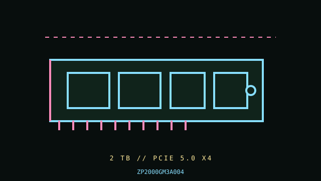

[ PCIE 5.0 NVME DRIVES // IDENTIFIED PRODUCT ]
Seagate FireCuda 540 2 TB (ZP2000GM3A004)
2 TB M.2 2280, bare module; PCIe 5.0 NVMe SSD. Cataloged by the complete manufacturer part number below; performance figures are vendor-rated, not independent test results.

IDENTIFICATION: Verify the complete MPN, suffix, serial/date code, hardware revision and firmware against the product label. Capacity variants, factory heatsinks and regional SKUs may differ; the link and rated data below apply only to the specified configuration where the manufacturer identifies it.
Manufacturer-identified specifications
| Product / MPN | Seagate FireCuda 540 2 TB (ZP2000GM3A004) — ZP2000GM3A004 |
|---|---|
| Capacity / form factor | 2 TB; M.2 2280, bare module. |
| Interface / lane width | PCIe 5.0 x4. |
| Protocol | NVMe 2.0. |
| Rated performance / endurance | Sequential up to 10,000 MB/s read and 10,000 MB/s write; 2,000 TBW endurance for 2 TB SKU. |
| Model era | 2023 product generation; check manufacturer lifecycle/support notice. |
| Heatsink / revision | Bare M.2 module; use a board heatsink with correct thermal-pad contact. Check board cover and airflow; sustained Gen5 writes may throttle. |
Compatibility, installation & service
- Requires PCIe 5.0 x4 host path for its rated interface performance; downshifts on Gen4 hosts. A 2280 M.2 socket must support NVMe, and the motherboard/UEFI must support booting from NVMe if used for OS. Verify exact manufacturer SKU and firmware.
- Confirm CPU/board lane generation, slot wiring, M.2 mounting and heatsink support in the board manual. Provide airflow for extended workloads, and do not stack the manufacturer/board heatsinks. Review SMART/NVMe health and backup before firmware or migration work; use the correct Seagate service utility and support workflow for this specific SSD.
- Do not hot-plug an M.2 module unless the server/platform manual explicitly documents hot-plug support. Shut down cleanly, disconnect standby power when instructed, and use electrostatic-discharge precautions during handling.
- Before replacing a boot drive, verify a recoverable backup, OS recovery media, encryption keys, firmware settings and the target system’s boot mode; physical fit does not establish compatibility.
Manufacturer references
- Seagate FireCuda 540 — manufacturer specifications and capacity tableOfficial manufacturer product/specification reference; use the exact MPN on the drive label and its linked specification/downloads for revisions, capacity ratings, fit and warranty limits.
- NVM Express — specifications and technical documentationStandards reference for NVMe; it does not establish this product’s SKU-specific implementation.
Manufacturer ratings are model/capacity-specific and measured under stated vendor conditions; they are not guarantees of sustained speed in every host. Confirm current datasheet/manual, support status and warranty in the manufacturer’s regional support portal before deployment.